The words you need
The system uses a small set of words on every screen. Once these are clear, nothing else is surprising.
Two more appear in the money sections: cost to serve is what the jobs actually cost you, and chargeable means the customer is invoiced for a job because it fell outside the cover.
Log in and find the app
- Open the address your administrator gave you in Chrome, Edge or Safari.
- Type your email and password and press Log in.
- You land on a grid of app icons. Click Facilities.
- The menu bar across the top is the whole app: Dashboards, Help Desk, Maintenance, Contracts, Register, Team, Reporting and Configuration.
A technician sees their own jobs and the asset register. A supervisor sees the whole help desk and can issue permits. A manager sees cost, contracts and rates as well. If a menu in this guide is not on your screen, you have not been given that role yet; section 15 says how to change it.
Put the estate in
A fault should be reported against a room, not against a description of a room. That only works if the estate is in the system first, and it is a short job: site, then buildings, then floors, then the rooms that matter.
- Go to Configuration > Sites and press New. Give it a name, a short code such as MGE, the total area and the handover date.
- On the site form, open the Buildings tab and add a row per block: name, code, what it is used for, storeys, area.
- Go to Configuration > Floors and add the levels of each building. Use the real level numbers, including basements as negative.
- Go to Register > Rooms and Spaces and add the rooms you will actually raise jobs against: plant rooms, switch rooms, risers, roof decks. You do not need every office.
Mark plant rooms and switch rooms as restricted while you add them. The system then knows access is controlled and says so on the job.
The asset register
An asset is anything you would repair rather than replace on the spot. Give each one a class first, because the class carries the defaults: how critical it is, how long it should last, and whether it is subject to a statutory examination.
- Configuration > Asset Classes: add a class per family of plant, for example Chillers, Lifts, Fire Systems, Generators.
- Register > Assets and press New for each machine. Put in the make, the model, the serial number and where it is.
- Fill in the install date and the warranty expiry. A surprising amount of money is spent repairing plant somebody else is still liable for.
- Set the parent asset where one sits inside another: a compressor under its chiller, a chiller under the plant package.
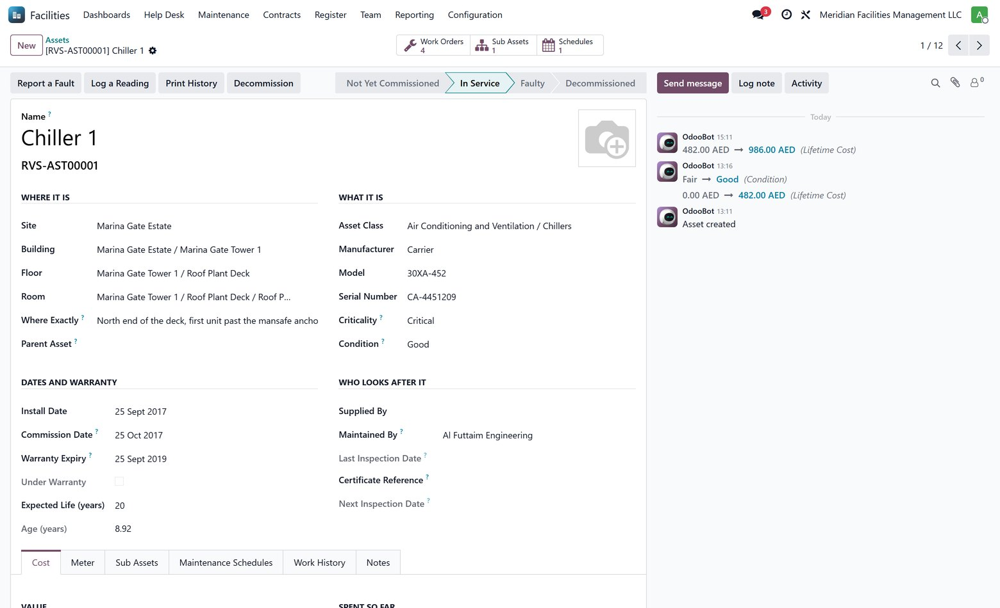
Take a fault call
- Help Desk > Work Orders, then New.
- Pick the site, the building, the floor and the room. Pick the asset if the caller can tell you which machine it is.
- Leave Origin on Reactive. Set the priority: P1 is an emergency, P2 urgent, P3 routine, P4 scheduled.
- Type the fault in the caller's own words. Rewriting it into engineering language at the desk loses the detail that finds the fault.
- Put the caller's name and extension in Caller so the engineer can ring back.
- Save. The job gets its number and its SLA clocks start.
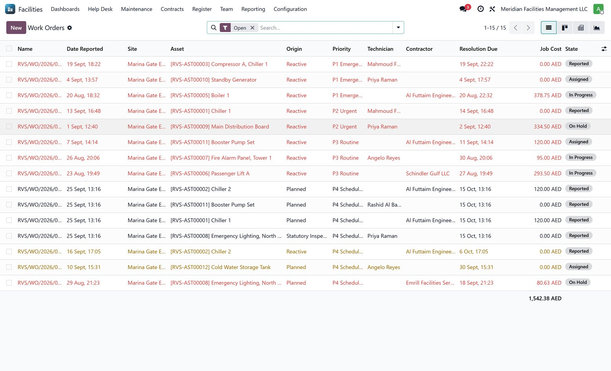
If the job is covered by a maintenance contract, a blue banner at the top of the form says so and names the contract. If it falls outside the cover, an amber banner says it is chargeable and why. That is settled as the job is raised, not argued about at the end of the month.
Assign it and work it
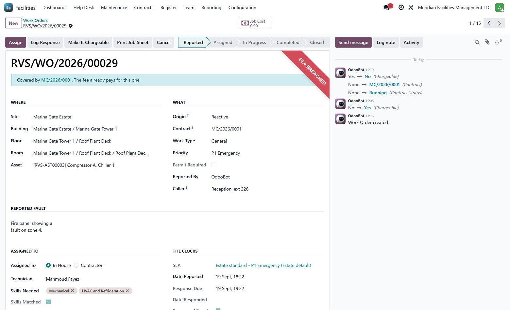
| Button | When | What it does |
|---|---|---|
| Assign | As soon as you know who is going | Puts the job on a technician or a contractor. It refuses a contractor whose insurance is about to run out, and warns if the person is not ticketed for the work. |
| Log Response | When somebody has actually responded | Stops the response clock. Do it honestly; this is the number the customer measures you on. |
| Start Work | On arrival | Starts the job. Permit work will not start until a permit has been issued and is inside its window. |
| Put on Hold | Waiting for a part, access, a permit or approval | Asks why. Depending on your settings, held time comes off the resolution clock. |
| Complete | Work finished | Asks what was done, writes the condition back onto the asset and closes any permits. |
| Close Off | Paperwork done | Takes the job off the board and frees the technician. Jobs left completed are closed automatically after the number of days in your settings. |
The What was done box is the only thing the next engineer on that asset will read. "Fixed" is worth nothing. "Traced to a failed gasket on the pump flange, renewed and made good" is worth an hour next time.
Permits to work
Set the Work Type on the job and the system decides whether a permit is needed. Until one has been issued and is inside its valid window, the job will not start.
- On the job, press Raise a Permit. The type comes across from the work type.
- Fill in the precautions, the isolation, the valid from and valid to times, and who is in charge of the work.
- A supervisor issues it. The job can now start.
- When the work finishes, the permit is handed back and closed automatically.
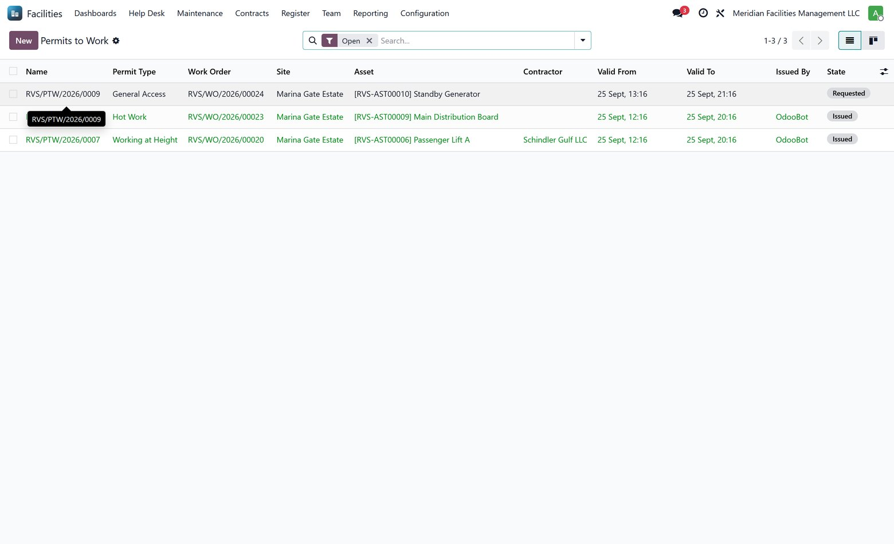
Parts and hours
- Open the Parts tab and add what was used, with the quantity and where it came from.
- Press Issue Parts. That takes them off the shelf properly, so the store balance is real.
- Open the Labour tab and add the hours. Tick Out of hours where they were: the premium is what makes an unplanned failure so much dearer than the same job planned.
- For a contractor's job, press Bill the Contractor when it is finished. The vendor bill is raised from what was actually used.
The system will not let a job be completed with parts on it that never left the store. That is deliberate: it is the only way the stock figure stays honest.
Planned maintenance
- Maintenance > Schedules, then New.
- Pick the asset, then the trigger: every so many days or months, or every so many hours or units on the meter.
- Write the task list into the instructions. It prints on the job sheet the engineer takes with them.
- Set how far ahead the job should be raised. Raising it the morning it falls due is the same as not planning it.
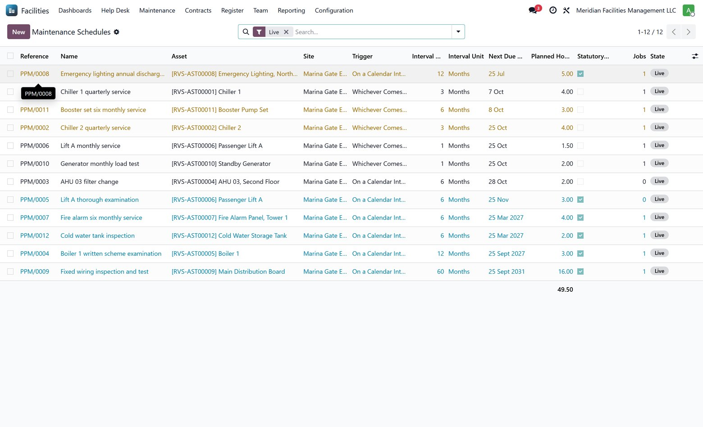
Planned work as a share of all work is the headline measure of whether an estate is under control. Below sixty percent you are firefighting, and the repair bill shows it within two quarters. The figure is on the Estate Performance board and on every site.
Statutory inspections
Mark an asset class as statutory and give it the examination interval. The schedule then raises the job as an inspection rather than a service, and the job will not complete until the certificate reference has been recorded.
- Maintenance > Statutory Inspections shows everything due and everything overdue.
- Open a job, do the work, and put the examination certificate number in Certificate Reference.
- Complete the job. The asset's next inspection date moves on by itself.
Maintenance contracts
A facilities business is not paid per work order. It signs an annual contract for a building, agrees what the cover includes, invoices on a cycle, and finds out at the end of the year whether that contract made money. This section is how all of that lives in the system.
- Contracts > Maintenance Contracts, then New.
- Put in the customer, the start and end dates and the notice period. The renewal list works back from the notice period, not from the end date, because by the end date the decision has been made for you.
- On the What Is Covered tab, add a line per site, building or single asset, each with the annual value it was priced at. A line naming a site covers every building on it; the most specific line wins when a job is raised.
- Tick what the fee includes: planned visits, reactive calls, the callout charge, out of hours, and parts up to a limit per job.
- Choose the rate card that prices anything outside the cover.
- Press Put on Cover. The contract gets its number and its first billing date, and any jobs already raised in the period on those buildings are put on it.
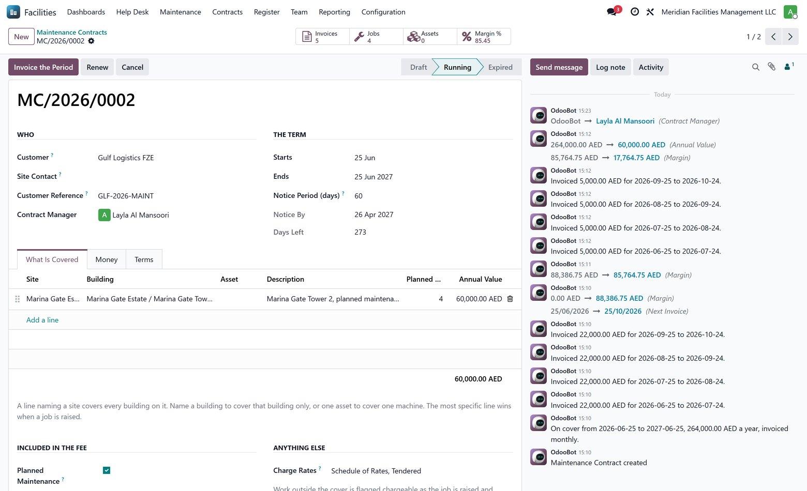
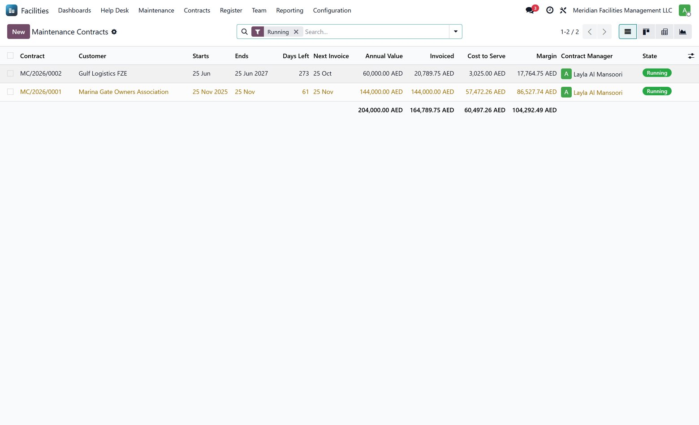
Invoicing the fee
Press Invoice the Period and the invoice for the period the contract has reached is raised, with the dates it covers written on the line. Nothing is ever invoiced twice: the contract remembers where it got to. A scheduled job does the same thing overnight if you would rather leave it to run.
Renewals
When a contract enters its notice period it appears under Contracts > Renewals and the contract manager gets an activity. Renew copies the cover forward for another term as a draft, so the price is yours to set before the conversation.
Chargeable work and invoices
Work outside the cover is flagged as the job is raised, with the reason on it: no contract, outside what the contract covers, out of hours, parts over the allowance, damage, or project work. When the job is closed it appears on one list with a price already on it.
- Contracts > Chargeable Work shows everything finished and waiting to be billed.
- Check the figures. The labour, the parts and the callout are priced off the rate card on the job.
- Tick the ones you want, then use Invoice the Customer from the actions menu, or open a job and press the button on it.
- Anything you decide to write off, open and press Write It Off. It comes off the list and the reason goes in the log.
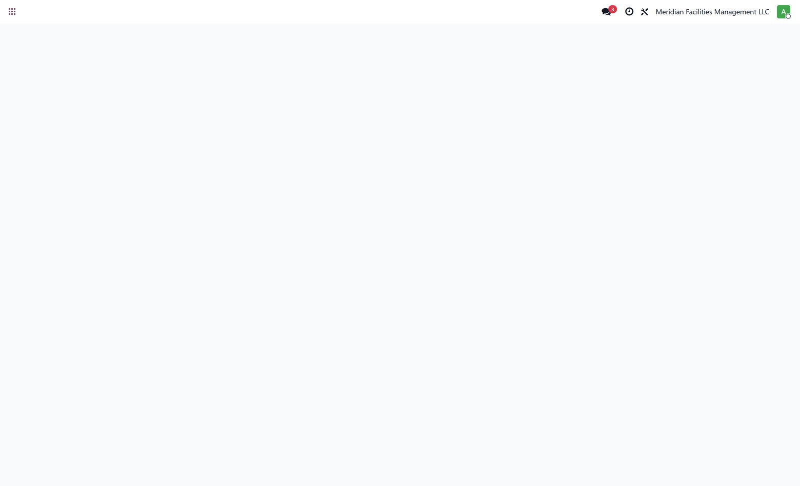
Rate cards
Configuration > Rate Cards holds what the customer is charged, which is not the same as what the work costs you. Set the hourly rate, the out of hours premium, the minimum charge, the markup on parts, the markup on a subcontractor's invoice and the callout charge. A subcontracted hour is passed through at their cost plus your margin, because a lift engineer costs more per hour than your own team.
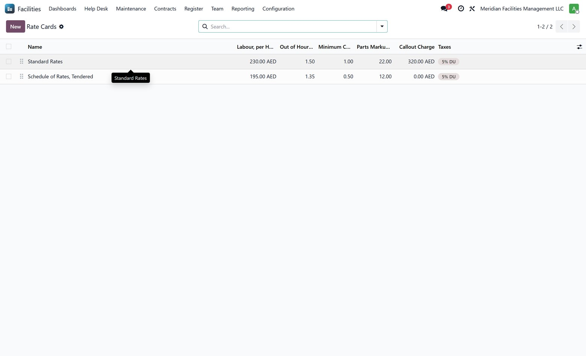
Budgets
- Contracts > Budgets, then New. Name it, set the year, and pick a site if it is for one estate.
- Add a line per building, or per class of plant, with the figure that was agreed.
- Press Fill from Last Year if you would rather start from what actually happened.
- Agree the Budget puts it live. The spend lands against it as jobs are closed.
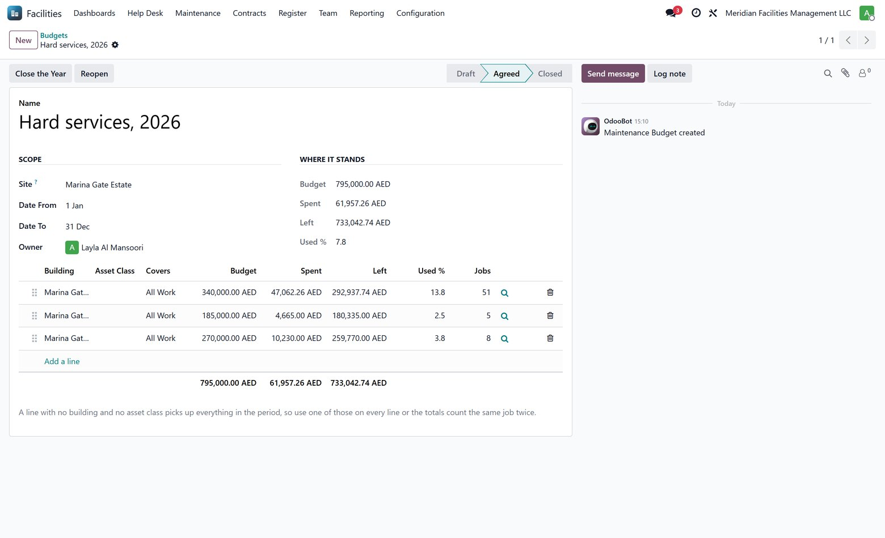
The dashboards
Every figure on these boards opens the records behind it. A number nobody can drill into is decoration.
Estate Performance
For the facilities manager. What is open, what is past the SLA, the P1s, what is on hold, the planned against reactive ratio, the SLA percentages, the spend and how much of the budget has gone.
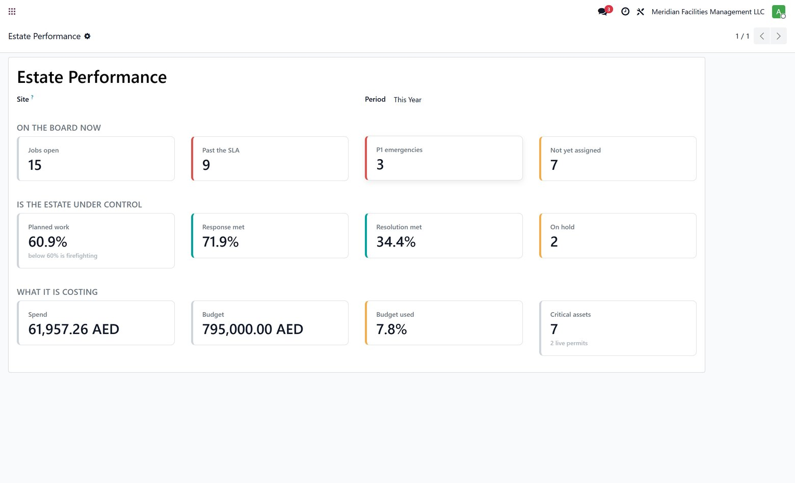
Contracts and Billing
For the contract manager. What is under contract, what is up for renewal and what that is worth, the invoices due, the chargeable work waiting, and the margin for the period.
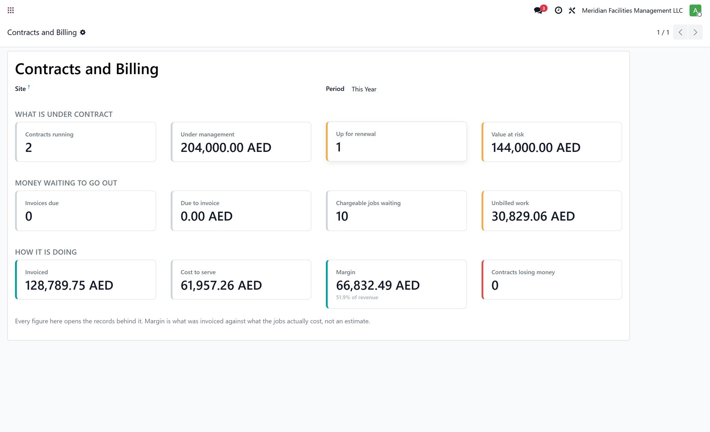
My Work
For the engineer. Their open jobs, what is overdue, what is due today, hours booked this week and what they closed this month. It works on a phone.
Reporting
- Planned against reactive — is the estate under control, by site and by month.
- SLA performance — response and resolution against the clocks you agreed, by priority and by customer.
- Asset lifetime cost — what each machine has cost since it was installed. This is the evidence behind a replacement bid.
- Contract profitability — what each contract billed against what it cost to serve.
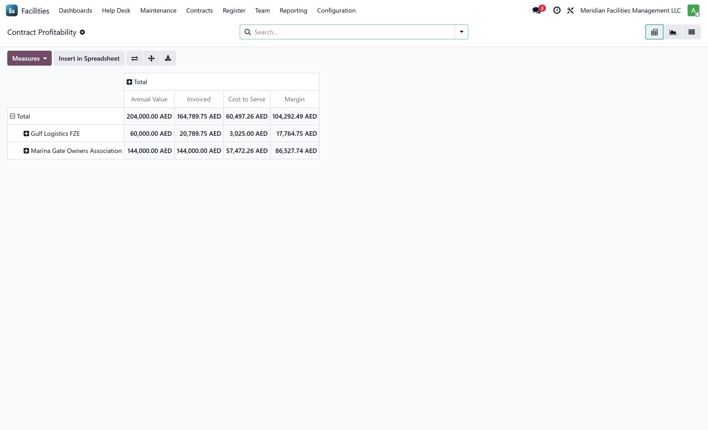
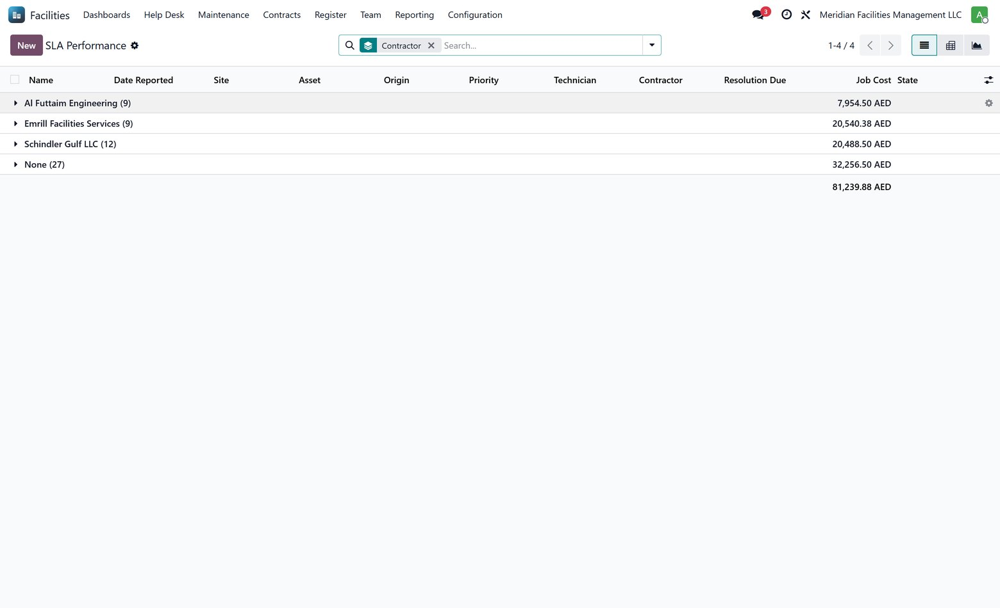
Two documents print from a job or a contract: the job sheet the engineer takes with them, and the contract statement that shows a customer what was covered, what was done and what was charged on top. Most disputes over a maintenance invoice are settled by that one page.
For the administrator
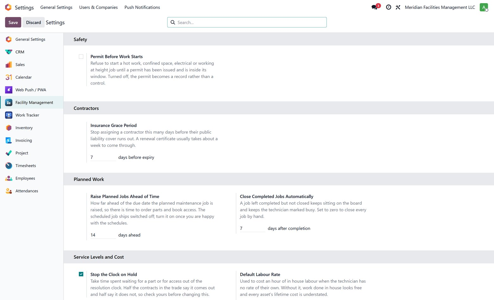
| Setting | What it does | Our advice |
|---|---|---|
| Permit before work starts | Refuses to start permit work without a live permit. | Leave it on. Off, the permit is a record rather than a control. |
| Insurance grace period | Stops assigning a contractor this many days before their cover runs out. | Seven days. A renewal certificate takes about a week. |
| Raise planned jobs ahead | How far ahead a planned job is raised. | Fourteen days, so there is time to order parts and book access. |
| Stop the clock on hold | Takes held time off the resolution clock. | Check your contract. Half the trade says it comes out and half says it does not. |
| Close completed jobs after | Closes jobs left completed. | Seven days. Zero means you close every job by hand. |
| Default labour rate | Costs an hour of in house labour when the technician has no rate. | Set it. Without it, work done in house looks free and every asset's lifetime cost is understated. |
| Default rate card | Prices chargeable work where the contract names no card. | Set it, or chargeable jobs are flagged and never priced. |
| Invoice chargeable jobs automatically | Raises the invoice the moment a chargeable job is closed. | Off, if somebody checks the price before it goes out. In most firms somebody does. |
Who can see what
| Role | Can do |
|---|---|
| Technician | Works the jobs on their own name, books hours and parts, reads the asset register. No rates, no contractor paperwork. |
| Maintenance Supervisor | Runs the help desk: raises and assigns every job, issues permits, closes jobs off. Reads live contracts but cannot change what they are worth. |
| Contracts and Billing | Contracts, what they cover, the rate card and the invoicing. Sees cost and margin on every job. |
| Facility Manager | Everything: the estate, the register, rates, contractor approval, and all the cost and compliance reporting. |
Set these on a user under Settings > Users & Companies > Users, in the Facility Management box.
Daily routine
- Morning. Open Dashboards > Estate Performance. Clear the P1s, then anything past the SLA, then what is waiting to be assigned.
- Through the day. Take calls into Help Desk > Work Orders. Assign, log the response, start, complete.
- Before anyone goes home. Book the hours and the parts on every job touched today. It never gets easier tomorrow.
- Friday. Check Contracts > Chargeable Work and raise the invoices. This is the money most firms forget.
- Month end. Check Contracts > Renewals, then the budget, then the planned against reactive ratio.
If something looks wrong
| What you see | Why | What to do |
|---|---|---|
| The Facilities icon is missing after login. | Your user has no Facility Management role. | Ask the administrator to set one on your user. Section 15. |
| A job will not start. | It is permit work and no permit has been issued, or the permit is outside its window. | Press Raise a Permit and have a supervisor issue it. |
| A job will not complete. | Parts on it have not been issued, the work was not written up, or it is a statutory inspection with no certificate reference. | The message says which. Fix that one thing. |
| A contractor cannot be assigned. | They are not approved, or their public liability cover is inside the grace period. | Team > Contractors: approve them, or put the renewed insurance date on. |
| A job says chargeable but the customer says it is covered. | The contract does not cover that kind of work, or the job fell outside the term. | Open the contract and check the cover ticks and the dates. The banner on the job names the reason. |
| Chargeable work shows no price. | No rate card on the contract and none set as the company default. | Section 11, and the default in Settings. |
| A contract shows no cost to serve. | The jobs on those buildings were raised outside the contract term, or the buildings are not on a cover line. | Check the cover lines and the start date. Putting a contract on cover attaches jobs already raised inside the term. |
| Planned jobs are not appearing. | The nightly schedule run is switched off, which is how it ships. | Ask the administrator to enable it once you are happy with the schedules. |
Anything else: write to info@way4tech.com with the job number and a screenshot.